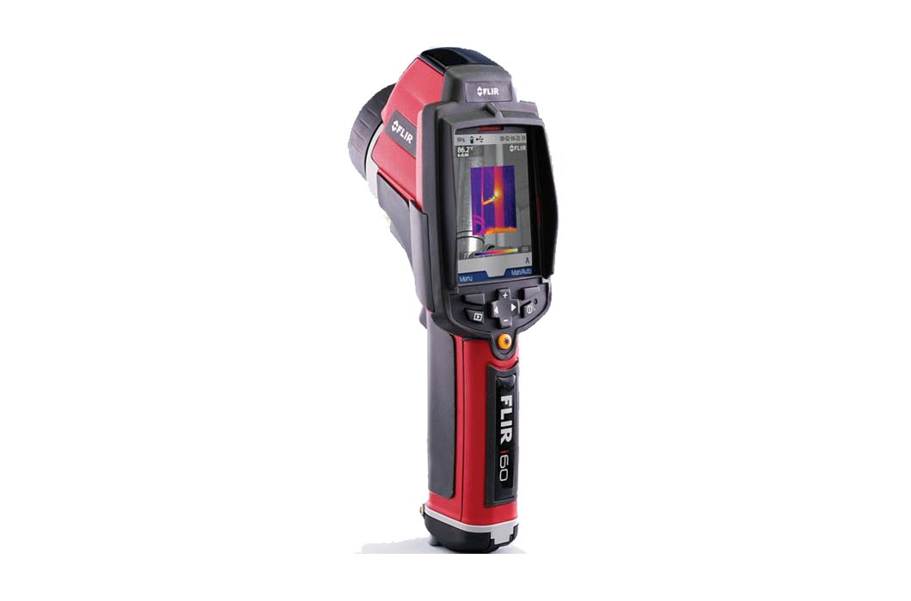
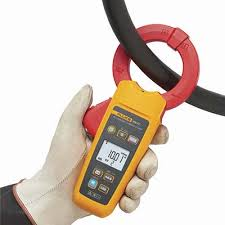
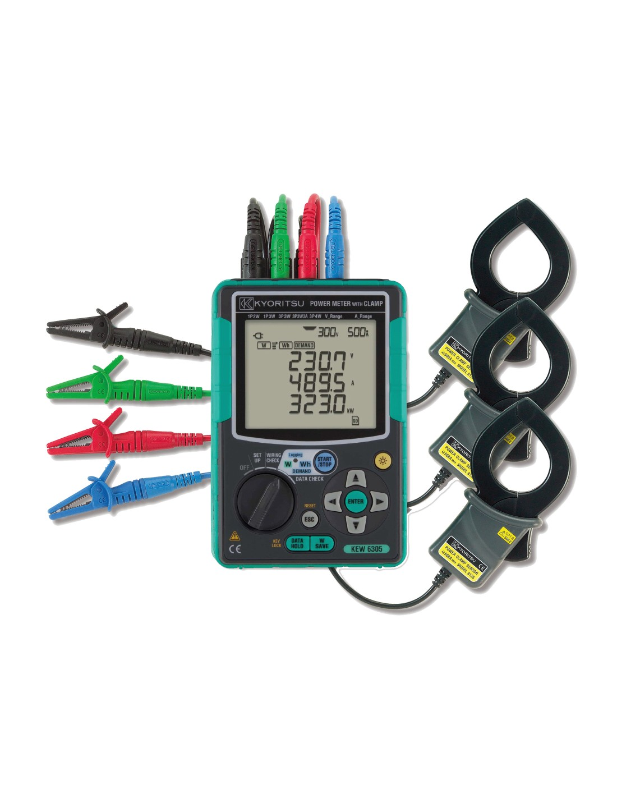

BÚSQUEDA DE FALLAS
Ensayos y Mediciones
Aplicables a diversas instalaciones
En Metrelex realizamos los ensayos y mediciones necesarios con equipos de calidad para garantizar una medición confiable y segura.
PRUEBAS Y SERVICIOS
- Auditorias de instalaciones electricas para obtención de T1
- Busqueda de fallas y soluciones
- Detección de fugas de corriente y soluciones
- Verificación de aislamiento en conductores
NUESTROS EQUIPOS

CÁMARA TERMOGRÁFICA,
CÁMARA TERMOGRÁFICA,
MODELO FLIR I60
- IR Resolución: 32,400 pixels (180 x 180)
- Campo de visión/distancia mínima de enfoque: 25° X 25°/0.10m
- Rango de temperatura: -20°C a 350°C
- Enfoque Manual
- Pantalla LCD a color 3,5’
- Modo de Área mínimo y máximo
- Fusion Picture in Picture (PIP)
- Puntero laser al punto caliente en la imagen IR con el objetivo físico real

MEDIDOR DE FUGA DE CORRIENTE
MEDIDOR DE FUGA DE CORRIENTE
MODELO FLUKE 369 FC
- Mediciones de verdadero valor eficaz para medir con precisión formas de onda complejas, no sinusoidales
- Apertura de la mordaza: 61 mm
- Resolución máxima 1 µA, mide hasta 60 A
- La función de filtro seleccionable elimina el ruido no deseado.
- Lecturas de mínimo, máximo, promedio y retención de datos en pantalla

MEDIDOR DE POTENCIA
MEDIDOR DE POTENCIA
MODELO KYORITSU 6305
- Monitoreo, registro y análisis completos en tiempo real de sistemas monofásicos y trifásicos
- Mediciones de voltaje, corriente, factor de potencia y frecuencia
- Análisis de potencia (potencia activa, aparente y reactiva)
- Análisis de energía (potencia activa, aparente y reactiva)
- Amplia selección de sensores de abrazadera que permiten mediciones de 0,1 A a 3000 A
- Mediciones remotas y en tiempo real usando la aplicación Android (Bluetooth)
Para más información sobre nuestros instrumentos, visita nuestra carta de presentación.